首页 / 生物
生物
表格筛选：点击下面的按钮筛选（可多选，再次点击取消；点「全部」恢复）：
栖息地：全部水生生物陆地生物海岸生物
品质：全部白色品质紫色品质金色品质
分组名称：全部鱼跃河川·冰雪鱼跃海渊·冰雪鱼荡四季鱼荡四季·特产海阔任鱼跃冬鱼潜渊春水鱼游星屿之澹（禾夏）星屿之沧（禾夏）星屿之澹（塔法）星屿之沧（塔法）虫鸣山林·沐雪四季虫歌·地面四季虫歌·视平四季虫歌·高空四季虫歌·特产冬沐虫歌虫鸣春晓虫舞星屿（禾夏）虫舞星屿（塔法）浪潮涌岸·冰雪潮涌四季潮涌四季·特产冬涌潮起滩岸铺春星屿之滩（禾夏）星屿之滩（塔法）
地区：全部全地区沐雪季星屿特产禾夏塔法禾夏H83区星屿特产星屿特产塔法T31区星屿特产
出没地：全部河流近海山地湖泊平原湖泊瀑布下灌木丛附近花朵附近树木枝干上空中矿石草地作物附近潮汐带
活跃季节：全部全年冬季冬季、春季春季、夏季春季
出没时间：全部全天白天夜晚
活跃天气：全部任意天气下雨雪天
| 图标 | 栖息地 | 编号 | 名称 | 品质 | 体长范围 | 分组名称 | 地区 | 出没地 | 活跃季节 | 出没时间 | 活跃天气 | 图鉴描述 |
|---|---|---|---|---|---|---|---|---|---|---|---|---|
| 水生生物 | 97 | 银鱼 | 白色品质 | 3.00 - 5.00 厘 | 鱼跃河川·冰雪 | 沐雪季星屿特产 | 河流 | 全年 | 全天 | 任意天气 | 银鱼的生物习性，尚在研究中…… | |
| 水生生物 | 98 | 淡红墨头鱼 | 白色品质 | 1.50 - 2.50 厘 | 鱼跃河川·冰雪 | 沐雪季星屿特产 | 河流 | 全年 | 全天 | 任意天气 | 淡红墨头鱼的生物习性，尚在研究中…… | |
| 水生生物 | 109 | 薄荷炫彩灯鱼 | 紫色品质 | 1.50 - 2.50 厘 | 鱼跃河川·冰雪 | 沐雪季星屿特产 | 河流 | 全年 | 全天 | 任意天气 | 薄荷炫彩灯鱼的生物习性，尚在研究中…… | |
| 水生生物 | 110 | 伯氏妊丽鱼 | 紫色品质 | 16.00 - 32.00 厘 | 鱼跃河川·冰雪 | 沐雪季星屿特产 | 河流 | 全年 | 全天 | 任意天气 | 伯氏妊丽鱼的生物习性，尚在研究中…… | |
| 水生生物 | 111 | 雪丽旗鳉 | 紫色品质 | 4.00 - 8.00 厘 | 鱼跃河川·冰雪 | 沐雪季星屿特产 | 河流 | 全年 | 全天 | 任意天气 | 雪丽旗鳉的生物习性，尚在研究中…… | |
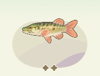 | 水生生物 | 112 | 带纹狗鱼 | 紫色品质 | 12.00 - 24.00 厘 | 鱼跃河川·冰雪 | 沐雪季星屿特产 | 河流 | 全年 | 全天 | 任意天气 | 带纹狗鱼的生物习性，尚在研究中…… |
| 水生生物 | 113 | 写鲤 | 紫色品质 | 36.00 - 72.00 厘 | 鱼跃河川·冰雪 | 沐雪季星屿特产 | 河流 | 全年 | 全天 | 任意天气 | 写鲤的生物习性，尚在研究中…… | |
| 水生生物 | 114 | 黑鱼 | 紫色品质 | 30.00 - 60.00 厘 | 鱼跃河川·冰雪 | 沐雪季星屿特产 | 河流 | 全年 | 全天 | 任意天气 | 黑鱼的生物习性，尚在研究中…… | |
| 水生生物 | 银龙鱼 | 金色品质 | 鱼跃河川·冰雪 | 沐雪季星屿特产 | 河流 | 全年 | 全天 | 任意天气 | ||||
| 水生生物 | 多鳞沙粒魟 | 金色品质 | 鱼跃河川·冰雪 | 沐雪季星屿特产 | 河流 | 全年 | 全天 | 任意天气 | ||||
| 水生生物 | 黑斑狗鱼 | 金色品质 | 鱼跃河川·冰雪 | 沐雪季星屿特产 | 河流 | 全年 | 全天 | 任意天气 | ||||
| 水生生物 | 白斑狗鱼 | 金色品质 | 鱼跃河川·冰雪 | 沐雪季星屿特产 | 河流 | 全年 | 全天 | 任意天气 | ||||
| 水生生物 | 103 | 角扳机鲀 | 白色品质 | 8.00 - 16.00 厘 | 鱼跃海渊·冰雪 | 沐雪季星屿特产 | 近海 | 全年 | 全天 | 任意天气 | 角扳机鲀的生物习性，尚在研究中…… | |
| 水生生物 | 104 | 老虎斑 | 白色品质 | 60.00 - 120.00 厘 | 鱼跃海渊·冰雪 | 沐雪季星屿特产 | 近海 | 全年 | 全天 | 任意天气 | 老虎斑的生物习性，尚在研究中…… | |
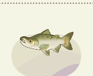 | 水生生物 | 129 | 帝王鲑 | 紫色品质 | 36.00 - 72.00 厘 | 鱼跃海渊·冰雪 | 沐雪季星屿特产 | 近海 | 全年 | 全天 | 任意天气 | 帝王鲑的生物习性，尚在研究中…… |
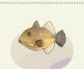 | 水生生物 | 130 | 真多棘鳞鲀 | 紫色品质 | 8.00 - 16.00 厘 | 鱼跃海渊·冰雪 | 沐雪季星屿特产 | 近海 | 全年 | 全天 | 任意天气 | 真多棘鳞鲀的生物习性，尚在研究中…… |
| 水生生物 | 131 | 半光密光鳃鱼 | 紫色品质 | 3.00 - 5.00 厘 | 鱼跃海渊·冰雪 | 沐雪季星屿特产 | 近海 | 全年 | 全天 | 任意天气 | 半光密光鳃鱼的生物习性，尚在研究中…… | |
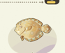 | 水生生物 | 132 | 狮鲆 | 紫色品质 | 16.00 - 32.00 厘 | 鱼跃海渊·冰雪 | 沐雪季星屿特产 | 近海 | 全年 | 全天 | 任意天气 | 狮鲆的生物习性，尚在研究中…… |
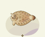 | 水生生物 | 133 | 豹鲽 | 紫色品质 | 16.00 - 32.00 厘 | 鱼跃海渊·冰雪 | 沐雪季星屿特产 | 近海 | 全年 | 全天 | 任意天气 | 豹鲽的生物习性，尚在研究中…… |
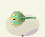 | 水生生物 | 134 | 蓝斑条尾魟 | 紫色品质 | 60.00 - 95.00 厘 | 鱼跃海渊·冰雪 | 沐雪季星屿特产 | 近海 | 全年 | 全天 | 任意天气 | 蓝斑条尾魟的生物习性，尚在研究中…… |
| 水生生物 | 黑斑条尾魟 | 金色品质 | 鱼跃海渊·冰雪 | 沐雪季星屿特产 | 近海 | 全年 | 全天 | 任意天气 | ||||
| 水生生物 | 孔雀鲆 | 金色品质 | 鱼跃海渊·冰雪 | 沐雪季星屿特产 | 近海 | 全年 | 全天 | 任意天气 | ||||
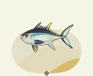 | 水生生物 | 110 | 黑鲔 | 金色品质 | 100.00 - 190.00 厘 | 鱼跃海渊·冰雪 | 沐雪季星屿特产 | 近海 | 全年 | 全天 | 任意天气 | 黑鲔的生物习性，尚在研究中…… |
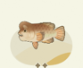 | 水生生物 | 111 | 黄金突额隆头鱼 | 金色品质 | 110.00 - 209.00 厘 | 鱼跃海渊·冰雪 | 沐雪季星屿特产 | 近海 | 全年 | 全天 | 任意天气 | 黄金突额隆头鱼的生物习性，尚在研究中…… |
| 水生生物 | 2 | 草鱼 | 白色品质 | 36.00 - 72.00 厘 | 鱼荡四季 | 全地区 | 河流 | 全年 | 全天 | 任意天气 | 很常见的食用鱼，缺点是刺太多。 | |
| 水生生物 | 3 | 虹鳟 | 紫色品质 | 36.00 - 72.00 厘 | 鱼荡四季 | 全地区 | 山地湖泊 | 全年 | 白天 | 任意天气 | 有些水下彩虹奇观，有可能只是虹鳟经过。 | |
| 水生生物 | 6 | 食蚊鱼 | 白色品质 | 1.50 - 2.50 厘 | 鱼荡四季 | 全地区 | 河流 | 全年 | 全天 | 任意天气 | 人类希望食蚊鱼多多食蚊，但它还是要吃一些不该吃的。 | |
| 水生生物 | 7 | 一眉道人鱼 | 紫色品质 | 1.50 - 2.50 厘 | 鱼荡四季 | 禾夏 | 平原湖泊 | 全年 | 全天 | 任意天气 | 请注意！它喜欢对比自己小的鱼类重拳出击。 | |
| 水生生物 | 8 | 红月雷龙 | 金色品质 | 30.00 - 60.00 厘 | 鱼荡四季 | 全地区 | 瀑布下 | 全年 | 夜晚 | 任意天气 | 当原应是黑色的月鳢呈现出红色，就变成身成“红月雷龙”。 | |
| 水生生物 | 11 | 太阳鱼 | 紫色品质 | 8.00 - 16.00 厘 | 鱼荡四季 | 全地区 | 河流 | 全年 | 白天 | 任意天气 | 它应该不希望自己可以刚好放在煎锅里。 | |
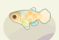 | 水生生物 | 13 | 青鳝 | 紫色品质 | 1.50 - 2.50 厘 | 鱼荡四季 | 全地区 | 平原湖泊 | 全年 | 全天 | 任意天气 | 观赏青鳝的最好角度，是自上而下。 |
| 水生生物 | 14 | 阴影钝鲈 | 紫色品质 | 8.00 - 16.00 厘 | 鱼荡四季 | 全地区 | 河流 | 全年 | 夜晚 | 任意天气 | “光即是影”，阴影钝鲈也是一种太阳鱼。 | |
| 水生生物 | 17 | 金鳟 | 金色品质 | 36.00 - 72.00 厘 | 鱼荡四季 | 全地区 | 山地湖泊 | 全年 | 全天 | 任意天气 | 金鳟比虹鳟更尊贵，但吃着没有明显区别。 | |
| 水生生物 | 18 | 红鲑 | 金色品质 | 36.00 - 72.00 厘 | 鱼荡四季 | 全地区 | 河流 | 全年 | 白天 | 任意天气 | 红鲑在回到河流的时候，才会变成红色。 | |
| 水生生物 | 19 | 罗非鱼 | 白色品质 | 8.00 - 16.00 厘 | 鱼荡四季 | 全地区 | 河流 | 全年 | 全天 | 任意天气 | 请不要随意放生罗非鱼，不然河里就会全是罗非鱼。 | |
| 水生生物 | 红钻吸鳅 | 紫色品质 | 鱼荡四季 | 全地区 | 山地湖泊 | 全年 | 夜晚 | 下雨 | ||||
| 水生生物 | 35 | 蛇仔鱼 | 白色品质 | 3.00 - 5.00 厘 | 鱼荡四季 | 全地区 | 瀑布下 | 全年 | 全天 | 任意天气 | 很多人还是更习惯喊它苦力泥鳅。 | |
| 水生生物 | 36 | 鹿斑浅黄锦鲤 | 紫色品质 | 36.00 - 72.00 厘 | 鱼荡四季 | 全地区 | 山地湖泊 | 全年 | 全天 | 下雨 | 在缸里，还是在锅里，很多时候取决于外表。 | |
| 水生生物 | 37 | 马口鱼 | 白色品质 | 12.00 - 24.00 厘 | 鱼荡四季 | 全地区 | 河流 | 全年 | 全天 | 任意天气 | “马口”好胃口。 | |
| 水生生物 | 38 | 彩石鳑鲏 | 紫色品质 | 8.00 - 16.00 厘 | 鱼荡四季 | 全地区 | 河流 | 全年 | 全天 | 任意天气 | 河蚌也会依赖它来生小河蚌。 | |
| 水生生物 | 43 | 红纹鳜 | 紫色品质 | 8.00 - 16.00 厘 | 鱼荡四季 | 全地区 | 河流 | 全年 | 全天 | 任意天气 | 长得好看，也不影响食用。 | |
| 水生生物 | 44 | 花鳅 | 紫色品质 | 3.00 - 5.00 厘 | 鱼荡四季 | 全地区 | 河流 | 全年 | 夜晚 | 任意天气 | 观赏花鳅的同时，也可以练就非凡观察力。 | |
| 水生生物 | 97 | 大马哈鱼 | 紫色品质 | 36.00 - 72.00 厘 | 鱼荡四季 | 全地区 | 河流 | 冬季 | 全天 | 雪天 | 大马哈鱼的生物习性，尚在研究中…… | |
| 水生生物 | 93 | 池沼公鱼 | 紫色品质 | 3.00 - 5.00 厘 | 鱼荡四季 | 全地区 | 河流 | 冬季 | 全天 | 雪天 | 池沼公鱼的生物习性，尚在研究中…… | |
| 水生生物 | 12 | 青鱼 | 白色品质 | 36.00 - 72.00 厘 | 鱼荡四季·特产 | 禾夏 | 河流 | 全年 | 全天 | 任意天气 | 和草鱼很像，和草鱼一样美味。 | |
| 水生生物 | 15 | 白云金丝鱼 | 紫色品质 | 1.50 - 2.50 厘 | 鱼荡四季·特产 | 禾夏 | 平原湖泊 | 全年 | 全天 | 任意天气 | 冬天来临之前，它会吃得比平时更多。 | |
| 水生生物 | 25 | 水虎鱼 | 白色品质 | 8.00 - 16.00 厘 | 鱼荡四季·特产 | 塔法 | 河流 | 全年 | 全天 | 任意天气 | 很凶，但仅限在水里的时候。 | |
| 水生生物 | 27 | 地图鱼 | 紫色品质 | 20.00 - 40.00 厘 | 鱼荡四季·特产 | 塔法 | 平原湖泊 | 全年 | 白天 | 任意天气 | 地图鱼的“地图”没有标注宝藏的位置。 | |
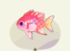 | 水生生物 | 61 | 花鲻 | 紫色品质 | 8.00 - 16.00 厘 | 鱼荡四季·特产 | 禾夏 | 近海 | 全年 | 夜晚 | 任意天气 | 美丽很少能和美味并重，但花鲻做到了。 |
| 水生生物 | 65 | 蓝带荷包鱼 | 白色品质 | 20.00 - 40.00 厘 | 鱼荡四季·特产 | 禾夏 | 近海 | 全年 | 全天 | 任意天气 | 像个荷包，但装不了食物之外的东西。 | |
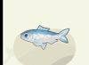 | 水生生物 | 74 | 鰶鱼 | 白色品质 | 3.00 - 5.00 厘 | 鱼荡四季·特产 | 塔法 | 近海 | 全年 | 白天 | 任意天气 | 在被发掘出价值之前，它被叫做“烂船丁”。 |
| 水生生物 | 77 | 红点石斑鱼 | 紫色品质 | 36.00 - 72.00 厘 | 鱼荡四季·特产 | 塔法 | 近海 | 全年 | 夜晚 | 任意天气 | 比章鱼更会偷袭。 | |
| 水生生物 | 48 | 红衫鱼 | 白色品质 | 16.00 - 32.00 厘 | 海阔任鱼跃 | 全地区 | 近海 | 全年 | 全天 | 任意天气 | 因为过于美味，让人忽略它其实也很美丽。 | |
| 水生生物 | 50 | 青衣鱼 | 金色品质 | 36.00 - 72.00 厘 | 海阔任鱼跃 | 全地区 | 近海 | 全年 | 全天 | 任意天气 | “青衣”听上去很柔弱，实际上它能一口咬碎海胆。 | |
| 水生生物 | 51 | 银鲳 | 白色品质 | 20.00 - 40.00 厘 | 海阔任鱼跃 | 全地区 | 近海 | 全年 | 全天 | 任意天气 | 钓上了银色的盘子不要扔，那可能是银鲳。 | |
| 水生生物 | 52 | 花尾燕魟 | 金色品质 | 75.00 - 150.00 厘 | 海阔任鱼跃 | 全地区 | 近海 | 全年 | 全天 | 任意天气 | 不要被它的柔软所迷惑，尾刺的毒性有致命危险。 | |
| 水生生物 | 53 | 蓝唐王鱼 | 紫色品质 | 8.00 - 16.00 厘 | 海阔任鱼跃 | 全地区 | 近海 | 全年 | 全天 | 任意天气 | 尾巴那一抹明亮的黄，实在太抢眼了。 | |
| 水生生物 | 55 | 黑带软棘鱼 | 紫色品质 | 20.00 - 40.00 厘 | 海阔任鱼跃 | 全地区 | 近海 | 全年 | 夜晚 | 任意天气 | 为了在洞穴里生存，它只得将棘刺变软。 | |
| 水生生物 | 56 | 月亮鱼 | 金色品质 | 110.00 - 209.00 厘 | 海阔任鱼跃 | 全地区 | 近海 | 全年 | 夜晚 | 任意天气 | 它的存在，打破了鱼都是冷血动物的刻板印象。 | |
| 水生生物 | 58 | 主刺盖鱼 | 紫色品质 | 20.00 - 40.00 厘 | 海阔任鱼跃 | 全地区 | 近海 | 全年 | 全天 | 任意天气 | 一种很好地诠释了什么叫“鱼大十八变”的鱼。 | |
| 水生生物 | 59 | 大黄鱼 | 紫色品质 | 36.00 - 72.00 厘 | 海阔任鱼跃 | 全地区 | 近海 | 全年 | 全天 | 任意天气 | 学名就是大黄鱼，不是长大了的小黄鱼。 | |
| 水生生物 | 60 | 沙丁鱼 | 白色品质 | 3.00 - 5.00 厘 | 海阔任鱼跃 | 全地区 | 近海 | 全年 | 全天 | 任意天气 | 它们喜欢挤在一起，不代表它们想要成为罐头。 | |
| 水生生物 | 64 | 美丽月蝶鱼 | 金色品质 | 8.00 - 16.00 厘 | 海阔任鱼跃 | 全地区 | 近海 | 全年 | 白天 | 任意天气 | 顾名思义，它真的很美丽。 | |
| 水生生物 | 67 | 鲑鱼 | 白色品质 | 36.00 - 72.00 厘 | 海阔任鱼跃 | 全地区 | 近海 | 全年 | 全天 | 任意天气 | 生活在海水里的鲑鱼，都是成年的鲑鱼。 | |
| 水生生物 | 箱鲀 | 紫色品质 | 海阔任鱼跃 | 全地区 | 近海 | 全年 | 白天 | 下雨 | ||||
| 水生生物 | 83 | 遮目鱼 | 白色品质 | 12.00 - 24.00 厘 | 海阔任鱼跃 | 全地区 | 近海 | 全年 | 全天 | 任意天气 | 吃得杂，所以长得快。 | |
| 水生生物 | 84 | 小丑鱼 | 紫色品质 | 1.50 - 2.50 厘 | 海阔任鱼跃 | 全地区 | 近海 | 全年 | 全天 | 任意天气 | 三文鱼刺身未必有它鲜艳。 | |
| 水生生物 | 85 | 双带狐狸鱼 | 紫色品质 | 20.00 - 40.00 厘 | 海阔任鱼跃 | 全地区 | 近海 | 全年 | 全天 | 任意天气 | 有剧毒，不过去掉毒刺后可放心食用。 | |
| 水生生物 | 鳇鱼 | 金色品质 | 冬鱼潜渊 | 禾夏 | 平原湖泊 | 冬季、春季 | 全天 | 任意天气 | ||||
| 水生生物 | 91 | 巨骨舌鱼 | 金色品质 | 100.00 - 190.00 厘 | 冬鱼潜渊 | 塔法 | 河流 | 冬季、春季 | 全天 | 任意天气 | 巨骨舌鱼的生物习性，尚在研究中…… | |
| 水生生物 | 98 | 樱鳟 | 紫色品质 | 36.00 - 72.00 厘 | 冬鱼潜渊 | 全地区 | 瀑布下 | 冬季 | 全天 | 任意天气 | 樱鳟的生物习性，尚在研究中…… | |
| 水生生物 | 99 | 翡翠斑马鱼 | 紫色品质 | 1.50 - 2.50 厘 | 冬鱼潜渊 | 全地区 | 河流 | 冬季 | 全天 | 任意天气 | 翡翠斑马鱼的生物习性，尚在研究中…… | |
| 水生生物 | 92 | 暗纹东方鲀 | 白色品质 | 16.00 - 32.00 厘 | 冬鱼潜渊 | 全地区 | 山地湖泊 | 冬季 | 全天 | 任意天气 | 暗纹东方鲀的生物习性，尚在研究中…… | |
| 水生生物 | 93 | 鲫鱼 | 白色品质 | 8.00 - 16.00 厘 | 冬鱼潜渊 | 全地区 | 河流 | 冬季 | 全天 | 任意天气 | 鲫鱼的生物习性，尚在研究中…… | |
| 水生生物 | 鳄雀鳝 | 金色品质 | 冬鱼潜渊 | 全地区 | 山地湖泊 | 冬季 | 全天 | 任意天气 | ||||
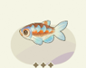 | 水生生物 | 100 | 彩虹鳅 | 紫色品质 | 1.50 - 2.50 厘 | 冬鱼潜渊 | 全地区 | 山地湖泊 | 冬季 | 全天 | 任意天气 | 彩虹鳅的生物习性，尚在研究中…… |
| 水生生物 | 101 | 闪光银板 | 紫色品质 | 8.00 - 16.00 厘 | 冬鱼潜渊 | 塔法 | 河流 | 冬季、春季 | 白天 | 任意天气 | 闪光银板的生物习性，尚在研究中…… | |
| 水生生物 | 102 | 糖果斑点鳅 | 紫色品质 | 20.00 - 40.00 厘 | 冬鱼潜渊 | 禾夏 | 河流 | 冬季、春季 | 夜晚 | 任意天气 | 糖果斑点鳅的生物习性，尚在研究中…… | |
| 水生生物 | 94 | 鳕鱼 | 紫色品质 | 36.00 - 72.00 厘 | 冬鱼潜渊 | 全地区 | 近海 | 冬季 | 全天 | 雪天 | 鳕鱼的生物习性，尚在研究中…… | |
| 水生生物 | 95 | 虎河鲀 | 紫色品质 | 16.00 - 32.00 厘 | 冬鱼潜渊 | 禾夏 | 近海 | 冬季、春季 | 夜晚 | 任意天气 | 虎河鲀的生物习性，尚在研究中…… | |
| 水生生物 | 海草龙鱼 | 金色品质 | 冬鱼潜渊 | 塔法 | 近海 | 冬季、春季 | 夜晚 | 任意天气 | ||||
| 水生生物 | 121 | 小鳞犬牙鱼 | 紫色品质 | 36.00 - 72.00 厘 | 冬鱼潜渊 | 塔法 | 近海 | 冬季、春季 | 白天 | 任意天气 | 小鳞犬牙鱼的生物习性，尚在研究中…… | |
| 水生生物 | 彩虹仙女龙鱼 | 金色品质 | 冬鱼潜渊 | 禾夏 | 近海 | 冬季、春季 | 全天 | 任意天气 | ||||
| 水生生物 | 94 | 黄脚立 | 白色品质 | 8.00 - 16.00 厘 | 冬鱼潜渊 | 全地区 | 近海 | 冬季 | 全天 | 任意天气 | 黄脚立的生物习性，尚在研究中…… | |
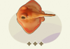 | 水生生物 | 122 | 赤红 | 紫色品质 | 60.00 - 95.00 厘 | 冬鱼潜渊 | 全地区 | 近海 | 全年 | 全天 | 任意天气 | 赤红的生物习性，尚在研究中…… |
| 水生生物 | 96 | 云纹蛇鳝 | 紫色品质 | 60.00 - 120.00 厘 | 冬鱼潜渊 | 全地区 | 近海 | 冬季 | 夜晚 | 任意天气 | 云纹蛇鳝的生物习性，尚在研究中…… | |
| 水生生物 | 95 | 翻车鲀 | 金色品质 | 120.00 - 216.00 厘 | 冬鱼潜渊 | 全地区 | 近海 | 冬季 | 全天 | 雪天 | 翻车鲀的生物习性，尚在研究中…… | |
| 水生生物 | 124 | 东星斑 | 紫色品质 | 8.00 - 16.00 厘 | 冬鱼潜渊 | 全地区 | 近海 | 全年 | 全天 | 任意天气 | 东星斑的生物习性，尚在研究中…… | |
| 水生生物 | 135 | 斑腰单孔鲀 | 紫色品质 | 8.00 - 16.00 厘 | 春水鱼游 | 全地区 | 河流 | 春季、夏季 | 白天 | 任意天气 | 非常凶的河鲀，可能有毒，不要把手指伸到它嘴边。 | |
| 水生生物 | 136 | 金球鲀 | 紫色品质 | 6.00 - 10.00 厘 | 春水鱼游 | 全地区 | 河流 | 春季、夏季 | 全天 | 任意天气 | 不会膨胀的河鲀，可能有毒，请不要食用。 | |
| 水生生物 | 137 | 红纹刺鳅 | 紫色品质 | 42.00 - 84.00 厘 | 春水鱼游 | 全地区 | 平原湖泊 | 春季、夏季 | 夜晚 | 任意天气 | 虽然长得像鳗鱼，但它不是鳗鱼的亲戚。 | |
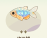 | 水生生物 | 138 | 玫瑰鲏 | 紫色品质 | 1.50 - 2.50 厘 | 春水鱼游 | 禾夏 | 平原湖泊 | 春季、夏季 | 全天 | 任意天气 | 对住的环境非常挑剔，住得不舒服绝对不发光。 |
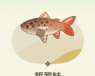 | 水生生物 | 112 | 哲罗鲑 | 金色品质 | 100.00 - 190.00 厘 | 春水鱼游 | 禾夏 | 山地湖泊 | 春季、夏季 | 全天 | 任意天气 | 传言中的“大红鱼水怪”，会是哲罗鲑吗？ |
| 水生生物 | 105 | 香鱼 | 白色品质 | 12.00 - 24.00 厘 | 春水鱼游 | 全地区 | 河流 | 春季、夏季 | 全天 | 任意天气 | 不只有黄瓜会有黄瓜香，香鱼也有。 | |
| 水生生物 | 139 | 红绿灯鱼 | 紫色品质 | 1.50 - 2.50 厘 | 春水鱼游 | 塔法 | 河流 | 春季、夏季 | 全天 | 任意天气 | 在水里，不需要遵守它“制定”的交通规则。 | |
| 水生生物 | 暗雷龙 | 金色品质 | 春水鱼游 | 塔法 | 山地湖泊 | 春季、夏季 | 全天 | 任意天气 | ||||
| 水生生物 | 106 | 蓝刀鱼 | 白色品质 | 3.00 - 5.00 厘 | 春水鱼游 | 全地区 | 山地湖泊 | 春季、夏季 | 全天 | 任意天气 | 以前是噩梦，现在是香饽饽。 | |
| 水生生物 | 114 | 亚东鲑 | 金色品质 | 36.00 - 72.00 厘 | 春水鱼游 | 全地区 | 瀑布下 | 春季、夏季 | 全天 | 任意天气 | 来去自如，是它的信条。 | |
| 水生生物 | 107 | 金翅雀鲷 | 白色品质 | 3.00 - 5.00 厘 | 春水鱼游 | 全地区 | 近海 | 春季、夏季 | 全天 | 任意天气 | 金翅指的是鱼翅，不是指能飞上天的那种翅。 | |
| 水生生物 | 140 | 宅泥鱼 | 紫色品质 | 6.00 - 10.00 厘 | 春水鱼游 | 全地区 | 近海 | 春季、夏季 | 白天 | 任意天气 | 在花枝招展的珊瑚鱼中，走黑白复古风的另类。 | |
| 水生生物 | 141 | 松毬鱼 | 紫色品质 | 3.00 - 5.00 厘 | 春水鱼游 | 禾夏 | 近海 | 春季、夏季 | 全天 | 任意天气 | “海中菠萝”和陆地菠萝一样硬。 | |
| 水生生物 | 142 | 烛光鱼 | 紫色品质 | 3.00 - 5.00 厘 | 春水鱼游 | 全地区 | 近海 | 春季、夏季 | 夜晚 | 任意天气 | 深海里会有人把烛光鱼当烛台用吗？ | |
| 水生生物 | 143 | 黄身海猪鱼 | 紫色品质 | 1.50 - 2.50 厘 | 春水鱼游 | 全地区 | 近海 | 春季、夏季 | 全天 | 任意天气 | 要掰开它的嘴巴，才能看到它像“猪”的部分。 | |
| 水生生物 | 黄金鲽鱼 | 金色品质 | 春水鱼游 | 塔法 | 近海 | 春季、夏季 | 全天 | 任意天气 | ||||
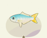 | 水生生物 | 144 | 革鲹 | 紫色品质 | 36.00 - 72.00 厘 | 春水鱼游 | 塔法 | 近海 | 春季、夏季 | 全天 | 任意天气 | 看上去很美味，实际上不太美味。 |
| 水生生物 | 红薄荷神仙鱼 | 金色品质 | 春水鱼游 | 禾夏 | 近海 | 春季、夏季 | 白天 | 任意天气 | ||||
| 水生生物 | 皇帝星斑 | 金色品质 | 春水鱼游 | 全地区 | 近海 | 春季、夏季 | 全天 | 任意天气 | ||||
| 水生生物 | 1 | 三色锦鲤 | 紫色品质 | 36.00 - 72.00 厘 | 星屿之澹（禾夏） | 禾夏H83区星屿特产 | 平原湖泊 | 全年 | 全天 | 任意天气 | 会不会带来好运，取决于好运的定义是什么。 | |
| 水生生物 | 20 | 彩虹鲷 | 白色品质 | 8.00 - 16.00 厘 | 星屿之澹（禾夏） | 禾夏H83区星屿特产 | 河流 | 全年 | 全天 | 任意天气 | 只有红色，也能叫彩虹。 | |
| 水生生物 | 21 | 黄金鳉 | 紫色品质 | 1.50 - 2.50 厘 | 星屿之澹（禾夏） | 禾夏H83区星屿特产 | 平原湖泊 | 全年 | 全天 | 任意天气 | 像黄金一样金灿灿，但卖不出黄金的价。 | |
| 水生生物 | 22 | 青竹鱼 | 紫色品质 | 36.00 - 72.00 厘 | 星屿之澹（禾夏） | 禾夏H83区星屿特产 | 河流 | 全年 | 全天 | 任意天气 | 脸红，是因为成熟，不是因为害羞。 | |
| 水生生物 | 23 | 小盾鳢 | 金色品质 | 100.00 - 190.00 厘 | 星屿之澹（禾夏） | 禾夏H83区星屿特产 | 平原湖泊 | 全年 | 全天 | 任意天气 | 长得再“大”，也要叫“小”盾鳢。 | |
| 水生生物 | 费氏舌鳎 | 金色品质 | 星屿之澹（禾夏） | 禾夏H83区星屿特产 | 河流 | 全年 | 夜晚 | 任意天气 | ||||
| 水生生物 | 40 | 彩虹雷龙 | 金色品质 | 30.00 - 60.00 厘 | 星屿之澹（禾夏） | 禾夏H83区星屿特产 | 河流 | 全年 | 全天 | 任意天气 | 不爱动，也可以观赏。 | |
| 水生生物 | 小黄鱼 | 白色品质 | 星屿之沧（禾夏） | 星屿特产 | 近海 | 全年 | 全天 | 任意天气 | ||||
| 水生生物 | 青点鹦嘴鱼 | 紫色品质 | 星屿之沧（禾夏） | 星屿特产 | 近海 | 全年 | 全天 | 任意天气 | ||||
| 水生生物 | 横带唇鱼 | 紫色品质 | 星屿之沧（禾夏） | 星屿特产 | 近海 | 全年 | 全天 | 任意天气 | ||||
| 水生生物 | 香拟花鮨 | 金色品质 | 星屿之沧（禾夏） | 星屿特产 | 近海 | 全年 | 全天 | 任意天气 | ||||
| 水生生物 | 蓝鳍金枪鱼 | 金色品质 | 星屿之沧（禾夏） | 星屿特产 | 近海 | 全年 | 夜晚 | 任意天气 | ||||
| 水生生物 | 豹纹魟 | 金色品质 | 星屿之沧（禾夏） | 星屿特产 | 近海 | 全年 | 全天 | 任意天气 | ||||
| 水生生物 | 甲尻鱼 | 紫色品质 | 星屿之沧（禾夏） | 星屿特产 | 近海 | 全年 | 全天 | 任意天气 | ||||
| 水生生物 | 多宝鱼 | 白色品质 | 星屿之沧（禾夏） | 星屿特产 | 近海 | 全年 | 全天 | 任意天气 | ||||
| 水生生物 | 黑珍珠鳉 | 紫色品质 | 星屿之澹（塔法） | 星屿特产 | 平原湖泊 | 全年 | 全天 | 任意天气 | ||||
| 水生生物 | 30 | 帝王三间鱼 | 紫色品质 | 36.00 - 72.00 厘 | 星屿之澹（塔法） | 塔法T31区星屿特产 | 山地湖泊 | 全年 | 全天 | 任意天气 | 幼鱼时期，就可一口吞下其他小鱼。 | |
| 水生生物 | 草绳恐龙鱼 | 金色品质 | 星屿之澹（塔法） | 塔法T31区星屿特产 | 平原湖泊 | 全年 | 夜晚 | 任意天气 | ||||
| 水生生物 | 32 | 蓝翼蓝珍珠 | 金色品质 | 3.00 - 5.00 厘 | 星屿之澹（塔法） | 塔法T31区星屿特产 | 山地湖泊 | 全年 | 全天 | 任意天气 | 胆子不大，领地意识很强。 | |
| 水生生物 | 暴君银板 | 金色品质 | 星屿之澹（塔法） | 塔法T31区星屿特产 | 河流 | 全年 | 全天 | 任意天气 | ||||
| 水生生物 | 45 | 淡黑镊丽鱼 | 白色品质 | 1.50 - 2.50 厘 | 星屿之澹（塔法） | 塔法T31区星屿特产 | 河流 | 全年 | 白天 | 任意天气 | 对它的第一印象，一般是金色，而非淡黑色。 | |
| 水生生物 | 46 | 七彩水晶旗 | 紫色品质 | 1.50 - 2.50 厘 | 星屿之澹（塔法） | 塔法T31区星屿特产 | 河流 | 全年 | 白天 | 任意天气 | 有多闪耀，取决于它的身体有多健康。 | |
| 水生生物 | 47 | 电光毒药灯 | 金色品质 | 1.50 - 2.50 厘 | 星屿之澹（塔法） | 塔法T31区星屿特产 | 河流 | 全年 | 全天 | 任意天气 | 起个怪名字是提高市场吸引力的捷径。 | |
| 水生生物 | 蓝刺尾鱼 | 紫色品质 | 星屿之沧（塔法） | 星屿特产 | 近海 | 全年 | 全天 | 任意天气 | ||||
| 水生生物 | 四线拉隆鱼 | 紫色品质 | 星屿之沧（塔法） | 星屿特产 | 近海 | 全年 | 全天 | 任意天气 | ||||
| 水生生物 | 黄鳍金枪鱼 | 金色品质 | 星屿之沧（塔法） | 星屿特产 | 近海 | 全年 | 全天 | 任意天气 | ||||
| 水生生物 | 虹彩鹦嘴鱼 | 金色品质 | 星屿之沧（塔法） | 星屿特产 | 近海 | 全年 | 白天 | 任意天气 | ||||
| 水生生物 | 鞭尾魟 | 金色品质 | 星屿之沧（塔法） | 星屿特产 | 近海 | 全年 | 全天 | 任意天气 | ||||
| 水生生物 | 91 | 大牙斑鲆 | 白色品质 | 16.00 - 32.00 厘 | 星屿之沧（塔法） | 星屿特产 | 近海 | 全年 | 全天 | 任意天气 | 伪装成海床是为了偷袭猎物。 | |
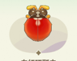 | 陆地生物 | 72 | 血红环瓢虫 | 紫色品质 | 2.70 - 3.60 厘 | 虫鸣山林·沐雪 | 沐雪季星屿特产 | 灌木丛附近 | 全年 | 全天 | 任意天气 | 血红环瓢虫的生物习性，尚在研究中…… |
| 陆地生物 | 73 | 青山蜗牛 | 紫色品质 | 2.00 - 3.00 厘 | 虫鸣山林·沐雪 | 沐雪季星屿特产 | 花朵附近 | 全年 | 全天 | 任意天气 | 青山蜗牛的生物习性，尚在研究中…… | |
| 陆地生物 | 75 | 虎头蜂 | 白色品质 | 4.00 - 6.00 厘 | 虫鸣山林·沐雪 | 沐雪季星屿特产 | 树木枝干上 | 全年 | 全天 | 任意天气 | 虎头蜂的生物习性，尚在研究中…… | |
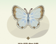 | 陆地生物 | 76 | 酢浆灰蝶 | 白色品质 | 4.60 - 7.60 厘 | 虫鸣山林·沐雪 | 沐雪季星屿特产 | 空中 | 全年 | 全天 | 任意天气 | 酢浆灰蝶的生物习性，尚在研究中…… |
| 陆地生物 | 77 | 白玉蜗牛 | 白色品质 | 11.00 - 17.00 厘 | 虫鸣山林·沐雪 | 沐雪季星屿特产 | 矿石 | 全年 | 全天 | 任意天气 | 白玉蜗牛的生物习性，尚在研究中…… | |
| 陆地生物 | 85 | 蓝额疏脉蜻 | 紫色品质 | 5.25 - 10.50 厘 | 虫鸣山林·沐雪 | 沐雪季星屿特产 | 河流 | 全年 | 全天 | 任意天气 | 蓝额疏脉蜻的生物习性，尚在研究中…… | |
| 陆地生物 | 86 | 金斑黑花金龟 | 紫色品质 | 6.30 - 10.50 厘 | 虫鸣山林·沐雪 | 沐雪季星屿特产 | 树木枝干上 | 全年 | 全天 | 任意天气 | 金斑黑花金龟的生物习性，尚在研究中…… | |
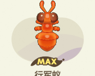 | 陆地生物 | 87 | 行军蚁 | 紫色品质 | 1.80 - 3.00 厘 | 虫鸣山林·沐雪 | 沐雪季星屿特产 | 草地 | 全年 | 全天 | 任意天气 | 行军蚁的生物习性，尚在研究中…… |
| 陆地生物 | 2 | 步甲虫 | 白色品质 | 2.00 - 3.40 厘 | 四季虫歌·地面 | 全地区 | 草地 | 全年 | 全天 | 任意天气 | 它拥有能够反杀青蛙的力量。 | |
| 陆地生物 | 22 | 疆星步甲 | 金色品质 | 2.00 - 3.40 厘 | 四季虫歌·地面 | 全地区 | 草地 | 全年 | 全天 | 任意天气 | 它是个冷酷无情的杀手，对它的猎物来说。 | |
| 陆地生物 | 32 | 大黑鳃金龟 | 白色品质 | 2.00 - 3.40 厘 | 四季虫歌·地面 | 全地区 | 作物附近 | 全年 | 全天 | 任意天气 | 哪里有好吃的作物，它都知道。 | |
| 陆地生物 | 42 | 熊蜂 | 紫色品质 | 1.80 - 2.60 厘 | 四季虫歌·地面 | 全地区 | 花朵附近 | 全年 | 白天 | 任意天气 | 像熊，比熊温柔。 | |
| 陆地生物 | 51 | 蜜罐蚁 | 白色品质 | 1.80 - 3.00 厘 | 四季虫歌·地面 | 全地区 | 草地 | 全年 | 全天 | 任意天气 | 它能证明蜜蜂和蚂蚁之间存在亲缘关系。 | |
| 陆地生物 | 52 | 收获蚁 | 白色品质 | 1.80 - 3.00 厘 | 四季虫歌·地面 | 全地区 | 草地 | 全年 | 全天 | 任意天气 | 它们会建粮仓来储存收获回来的粮食。 | |
| 陆地生物 | 53 | 花园葱蜗牛 | 白色品质 | 2.00 - 3.00 厘 | 四季虫歌·地面 | 全地区 | 草地 | 全年 | 全天 | 下雨 | 不在花园，也会遇见花园葱蜗牛。 | |
| 陆地生物 | 55 | 气步甲 | 紫色品质 | 2.00 - 3.40 厘 | 四季虫歌·地面 | 全地区 | 草地 | 全年 | 全天 | 任意天气 | 它喷出来的怪味气体，的确是…… | |
| 陆地生物 | 59 | 茴香凤蝶 | 白色品质 | 5.40 - 9.00 厘 | 四季虫歌·地面 | 全地区 | 花朵附近 | 全年 | 全天 | 任意天气 | 喜欢吃茴香，所以叫茴香凤蝶。 | |
| 陆地生物 | 1 | 独角仙 | 紫色品质 | 6.30 - 10.50 厘 | 四季虫歌·视平 | 全地区 | 树木枝干上 | 全年 | 全天 | 任意天气 | 威武的大角只用来和同类争斗。 | |
| 陆地生物 | 10 | 蚕蛾 | 白色品质 | 10.20 - 18.00 厘 | 四季虫歌·视平 | 全地区 | 树木枝干上 | 全年 | 夜晚 | 任意天气 | 破茧而出的它，失去了进食的能力。 | |
| 陆地生物 | 13 | 弧丽金龟 | 白色品质 | 2.70 - 3.60 厘 | 四季虫歌·视平 | 全地区 | 树木枝干上 | 全年 | 全天 | 任意天气 | 打不过，那就“装死”。这是弧丽金龟的策略。 | |
| 陆地生物 | 16 | 红天蛾 | 紫色品质 | 6.00 - 9.60 厘 | 四季虫歌·视平 | 全地区 | 树木枝干上 | 全年 | 夜晚 | 任意天气 | 它鲜艳的红色，专为黑夜而设。 | |
| 陆地生物 | 钩蛾 | 金色品质 | 四季虫歌·视平 | 全地区 | 树木枝干上 | 夜晚 | 任意天气 | |||||
| 陆地生物 | 45 | 甘薯龟花金虫 | 紫色品质 | 2.70 - 3.60 厘 | 四季虫歌·视平 | 全地区 | 树木枝干上 | 全年 | 全天 | 任意天气 | 它可以比金币还值钱。 | |
| 陆地生物 | 54 | 豹纹守宫 | 金色品质 | 15.00 - 25.00 厘 | 四季虫歌·视平 | 全地区 | 草地 | 全年 | 全天 | 任意天气 | 它的“豹纹”，存在多种颜色的可能性。 | |
| 陆地生物 | 67 | 姬蓝星天牛 | 金色品质 | 2.70 - 3.60 厘 | 四季虫歌·视平 | 全地区 | 树木枝干上 | 冬季 | 全天 | 雪天 | 姬蓝星天牛的生物习性，尚在研究中…… | |
| 陆地生物 | 3 | 虎斑蝶 | 白色品质 | 4.60 - 7.60 厘 | 四季虫歌·高空 | 全地区 | 空中 | 全年 | 全天 | 任意天气 | 有毒，毒性来自吃的食物。 | |
| 陆地生物 | 11 | 萤火虫 | 白色品质 | 2.70 - 3.60 厘 | 四季虫歌·高空 | 全地区 | 空中 | 全年 | 夜晚 | 任意天气 | 发不发光，全看它的心情。 | |
| 陆地生物 | 15 | 琉璃小灰蝶 | 紫色品质 | 4.60 - 7.60 厘 | 四季虫歌·高空 | 全地区 | 空中 | 全年 | 全天 | 任意天气 | 正面是“琉璃”，反面是“灰”。 | |
| 陆地生物 | 18 | 青带凤蝶 | 紫色品质 | 5.40 - 9.00 厘 | 四季虫歌·高空 | 全地区 | 空中 | 全年 | 全天 | 任意天气 | 破茧而出之后，就没法再伪装树叶了。 | |
| 陆地生物 | 43 | 黄蜻 | 白色品质 | 5.25 - 10.50 厘 | 四季虫歌·高空 | 全地区 | 河流 | 全年 | 全天 | 任意天气 | 黄蜻，不一定都是黄色的。 | |
| 陆地生物 | 桃红颈天牛 | 白色品质 | 四季虫歌·高空 | 全地区 | 空中 | 全天 | 下雨 | |||||
| 陆地生物 | 天蓝豆娘 | 紫色品质 | 四季虫歌·高空 | 全地区 | 空中 | 夜晚 | 下雨 | |||||
| 陆地生物 | 70 | 雪虫 | 白色品质 | 1.80 - 2.60 厘 | 四季虫歌·高空 | 全地区 | 空中 | 冬季 | 全天 | 雪天 | 雪虫的生物习性，尚在研究中…… | |
| 陆地生物 | 71 | 锯角雪萤 | 紫色品质 | 2.70 - 3.60 厘 | 四季虫歌·高空 | 全地区 | 空中 | 冬季 | 全天 | 雪天 | 锯角雪萤的生物习性，尚在研究中…… | |
| 陆地生物 | 4 | 螳螂 | 白色品质 | 5.40 - 7.80 厘 | 四季虫歌·特产 | 禾夏 | 灌木丛附近 | 全年 | 全天 | 任意天气 | 不管对手有多巨型，螳螂都会挑衅。 | |
| 陆地生物 | 兰花螳螂 | 金色品质 | 四季虫歌·特产 | 禾夏 | 花朵附近 | 全天 | 任意天气 | |||||
| 陆地生物 | 33 | 六星步甲 | 白色品质 | 2.00 - 3.40 厘 | 四季虫歌·特产 | 塔法 | 草地 | 全年 | 全天 | 任意天气 | 超强斗志，造就超强战绩。 | |
| 陆地生物 | 36 | 太阳蛾 | 紫色品质 | 10.20 - 18.00 厘 | 四季虫歌·特产 | 塔法 | 花朵附近 | 全年 | 白天 | 任意天气 | 名字里有“太阳”，也的确喜欢在太阳下活动。 | |
| 陆地生物 | 曙凤蝶 | 金色品质 | 四季虫歌·特产 | 禾夏 | 空中 | 全天 | 任意天气 | |||||
| 陆地生物 | 蜂鸟鹰蛾 | 金色品质 | 四季虫歌·特产 | 禾夏 | 空中 | 白天 | 任意天气 | |||||
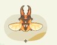 | 陆地生物 | 66 | 萨维奇锯锹 | 金色品质 | 6.30 - 10.50 厘 | 四季虫歌·特产 | 塔法 | 空中 | 全年 | 全天 | 任意天气 | 它的锯子，锯不动树。 |
| 陆地生物 | 67 | 蜣螂 | 白色品质 | 2.00 - 3.40 厘 | 四季虫歌·特产 | 塔法 | 草地 | 全年 | 白天 | 任意天气 | 它能把很多东西搓成球。 | |
| 陆地生物 | 17 | 黑丽翅蜻 | 紫色品质 | 5.25 - 10.50 厘 | 冬沐虫歌 | 禾夏 | 河流 | 冬季、春季 | 全天 | 任意天气 | 完美地诠释了什么叫五彩斑斓的黑。 | |
| 陆地生物 | 47 | 银目天蚕蛾 | 紫色品质 | 6.00 - 9.60 厘 | 冬沐虫歌 | 禾夏 | 空中 | 冬季 | 全天 | 任意天气 | 翅膀上的眼斑不是眼睛。 | |
| 陆地生物 | 68 | 长喙天蛾 | 白色品质 | 6.00 - 9.60 厘 | 冬沐虫歌 | 塔法 | 空中 | 冬季、春季 | 全天 | 任意天气 | 长喙是为了吸蜜而演化出来的。 | |
| 陆地生物 | 65 | 木星鼠妇 | 紫色品质 | 0.18 - 0.30 厘 | 冬沐虫歌 | 全地区 | 矿石 | 冬季、春季 | 全天 | 任意天气 | 木星鼠妇的生物习性，尚在研究中…… | |
| 陆地生物 | 66 | 小丑鼠妇 | 紫色品质 | 0.18 - 0.30 厘 | 冬沐虫歌 | 全地区 | 矿石 | 冬季 | 全天 | 任意天气 | 小丑鼠妇的生物习性，尚在研究中…… | |
| 陆地生物 | 71 | 猩红蜻蜓 | 白色品质 | 5.25 - 10.50 厘 | 冬沐虫歌 | 全地区 | 河流 | 冬季、春季 | 全天 | 任意天气 | 猩红蜻蜓的生物习性，尚在研究中…… | |
| 陆地生物 | 69 | 黑蜂 | 白色品质 | 1.80 - 2.60 厘 | 冬沐虫歌 | 全地区 | 花朵附近 | 冬季、春季 | 全天 | 任意天气 | 黑蜂的生物习性，尚在研究中…… | |
| 陆地生物 | 67 | 蛛蜂 | 紫色品质 | 1.80 - 2.60 厘 | 冬沐虫歌 | 全地区 | 空中 | 冬季 | 全天 | 任意天气 | 蛛蜂的生物习性，尚在研究中…… | |
| 陆地生物 | 68 | 雪人鼠妇 | 紫色品质 | 0.18 - 0.30 厘 | 冬沐虫歌 | 全地区 | 矿石 | 冬季 | 全天 | 雪天 | 雪人鼠妇的生物习性，尚在研究中…… | |
| 陆地生物 | 69 | 矮酸臭蚁 | 紫色品质 | 1.80 - 3.00 厘 | 冬沐虫歌 | 全地区 | 草地 | 冬季 | 全天 | 任意天气 | 矮酸臭蚁的生物习性，尚在研究中…… | |
| 陆地生物 | 68 | 红翡翠球马陆 | 金色品质 | 4.00 - 6.80 厘 | 冬沐虫歌 | 全地区 | 矿石 | 冬季、春季 | 全天 | 任意天气 | 红翡翠球马陆的生物习性，尚在研究中…… | |
| 陆地生物 | 70 | 亮朽木甲 | 金色品质 | 2.00 - 3.40 厘 | 冬沐虫歌 | 全地区 | 草地 | 冬季 | 全天 | 任意天气 | 亮朽木甲的生物习性，尚在研究中…… | |
| 陆地生物 | 70 | 染雪毒蛾 | 紫色品质 | 6.00 - 9.60 厘 | 冬沐虫歌 | 全地区 | 树木枝干上 | 冬季 | 全天 | 任意天气 | 染雪毒蛾的生物习性，尚在研究中…… | |
| 陆地生物 | 74 | 细黄胡蜂 | 紫色品质 | 1.80 - 2.60 厘 | 冬沐虫歌 | 全地区 | 花朵附近 | 冬季 | 全天 | 任意天气 | 细黄胡蜂的生物习性，尚在研究中…… | |
| 陆地生物 | 75 | 波纹扁角叶甲 | 紫色品质 | 2.70 - 3.60 厘 | 冬沐虫歌 | 全地区 | 灌木丛附近 | 冬季、春季 | 全天 | 任意天气 | 波纹扁角叶甲的生物习性，尚在研究中…… | |
| 陆地生物 | 夹竹桃天蛾 | 紫色品质 | 虫鸣春晓 | 全地区 | 树木枝干上 | 夜晚 | 任意天气 | |||||
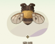 | 陆地生物 | 89 | 蜜蜂 | 紫色品质 | 1.80 - 2.60 厘 | 虫鸣春晓 | 全地区 | 花朵附近 | 春季、夏季 | 白天 | 任意天气 | 所产的蜂蜜会是什么口味，取决于它采了什么花。 |
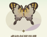 | 陆地生物 | 90 | 虎纹剑尾凤蝶 | 紫色品质 | 5.40 - 9.00 厘 | 虫鸣春晓 | 全地区 | 空中 | 春季、夏季 | 全天 | 任意天气 | 有“虎”有“剑”，但其实脾气温和。 |
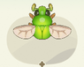 | 陆地生物 | 078 | 绿罗花金龟 | 白色品质 | 2.70 - 3.60 厘 | 虫鸣春晓 | 全地区 | 树木枝干上 | 春季 | 全天 | 任意天气 | 看上去像绿宝石，但前提是没将它翻过来。 |
| 陆地生物 | 咖啡透翅天蛾 | 紫色品质 | 虫鸣春晓 | 全地区 | 花朵附近 | 白天 | 任意天气 | |||||
| 陆地生物 | 79 | 鹤顶粉蝶 | 白色品质 | 4.60 - 7.60 厘 | 虫鸣春晓 | 全地区 | 空中 | 春季、夏季 | 全天 | 任意天气 | 鹤顶粉蝶没有毒性，但不代表可以吃进肚子里。 | |
| 陆地生物 | 电蛱蝶 | 金色品质 | 虫鸣春晓 | 全地区 | 空中 | 全天 | 任意天气 | |||||
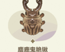 | 陆地生物 | 93 | 麋鹿鬼艳锹 | 紫色品质 | 6.30 - 10.50 厘 | 虫鸣春晓 | 全地区 | 树木枝干上 | 春季、夏季 | 全天 | 任意天气 | 长麋鹿角的不一定是麋鹿，也可以是麋鹿鬼艳锹。 |
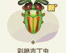 | 陆地生物 | 94 | 彩艳吉丁虫 | 紫色品质 | 2.70 - 3.60 厘 | 虫鸣春晓 | 全地区 | 树木枝干上 | 春季、夏季 | 全天 | 任意天气 | 以食为天的彩艳吉丁虫，大难临头也不一定会逃。 |
| 陆地生物 | 嘉翠蛱蝶 | 金色品质 | 虫鸣春晓 | 全地区 | 空中 | 白天 | 任意天气 | |||||
| 陆地生物 | 长尾大蚕蛾 | 金色品质 | 虫鸣春晓 | 全地区 | 树木枝干上 | 夜晚 | 任意天气 | |||||
| 陆地生物 | 玉带蜻 | 紫色品质 | 虫鸣春晓 | 全地区 | 河流 | 下雨 | ||||||
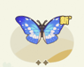 | 陆地生物 | 81 | 光明女神闪蝶 | 金色品质 | 5.40 - 9.00 厘 | 虫鸣春晓 | 塔法 | 空中 | 春季、夏季 | 全天 | 任意天气 | 一面华丽，一面低调。 |
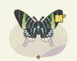 | 陆地生物 | 95 | 月亮蛾 | 紫色品质 | 10.20 - 18.00 厘 | 虫鸣春晓 | 塔法 | 花朵附近 | 春季、夏季 | 白天 | 任意天气 | 名字里有“月亮”，但比较喜欢在太阳下活动。 |
| 陆地生物 | 宽缘萤斑 | 紫色品质 | 虫鸣春晓 | 全地区 | 树木枝干上 | 夜晚 | 任意天气 | |||||
| 陆地生物 | 晓褐蜻 | 紫色品质 | 虫舞星屿（禾夏） | 星屿特产 | 河流 | 全天 | 任意天气 | |||||
| 陆地生物 | 28 | 报喜斑粉蝶 | 白色品质 | 4.60 - 7.60 厘 | 虫舞星屿（禾夏） | 禾夏H83区星屿特产 | 空中 | 全年 | 全天 | 任意天气 | 遇上它，不一定代表有喜事，但至少心情会不错。 | |
| 陆地生物 | 升天剑凤蝶 | 白色品质 | 虫舞星屿（禾夏） | 星屿特产 | 空中 | 全天 | 任意天气 | |||||
| 陆地生物 | 绿缘扁角叶甲 | 紫色品质 | 虫舞星屿（禾夏） | 星屿特产 | 树木枝干上 | 全天 | 任意天气 | |||||
| 陆地生物 | 霸王叶春蜓 | 紫色品质 | 虫舞星屿（禾夏） | 星屿特产 | 空中 | 全天 | 下雨 | |||||
| 陆地生物 | 网丝蛱蝶 | 白色品质 | 虫舞星屿（禾夏） | 星屿特产 | 花朵附近 | 全天 | 任意天气 | |||||
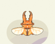 | 陆地生物 | 57 | 两点赤锯锹 | 紫色品质 | 6.30 - 10.50 厘 | 虫舞星屿（禾夏） | 禾夏H83区星屿特产 | 空中 | 全年 | 全天 | 任意天气 | 它的锯子，锯不动树。 |
| 陆地生物 | 37 | 帝王彩吉丁 | 紫色品质 | 6.30 - 10.50 厘 | 虫舞星屿（塔法） | 塔法T31区星屿特产 | 树木枝干上 | 全年 | 全天 | 任意天气 | 其之大，仅仅相对昆虫而言。 | |
| 陆地生物 | 38 | 海角蜜蜂 | 白色品质 | 1.80 - 2.60 厘 | 虫舞星屿（塔法） | 塔法T31区星屿特产 | 花朵附近 | 全年 | 全天 | 任意天气 | 毒性超强，小心被蛰。 | |
| 陆地生物 | 红裙伪珍蛱蝶 | 紫色品质 | 虫舞星屿（塔法） | 星屿特产 | 空中 | 全天 | 任意天气 | |||||
| 陆地生物 | 大王花金龟 | 紫色品质 | 虫舞星屿（塔法） | 星屿特产 | 树木枝干上 | 全天 | 任意天气 | |||||
| 陆地生物 | 62 | 直升机豆娘 | 白色品质 | 5.25 - 10.50 厘 | 虫舞星屿（塔法） | 塔法T31区星屿特产 | 空中 | 全年 | 全天 | 下雨 | 它能直接把蜘蛛从蛛网上薅下来吃。 | |
| 陆地生物 | 63 | 蓝大角花金龟 | 紫色品质 | 6.30 - 10.50 厘 | 虫舞星屿（塔法） | 塔法T31区星屿特产 | 空中 | 全年 | 全天 | 任意天气 | 漂亮，所以价值高。 | |
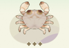 | 海岸生物 | 045 | 水晶蟹 | 紫色品质 | 9.00 - 18.00 厘 | 浪潮涌岸·冰雪 | 沐雪季星屿特产 | 潮汐带 | 全年 | 全天 | 任意天气 | 水晶蟹的生物习性，尚在研究中…… |
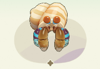 | 海岸生物 | 046 | 秀丽硬壳寄居蟹 | 紫色品质 | 5.40 - 9.00 厘 | 浪潮涌岸·冰雪 | 沐雪季星屿特产 | 潮汐带 | 全年 | 全天 | 任意天气 | 秀丽硬壳寄居蟹的生物习性，尚在研究中…… |
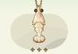 | 海岸生物 | 053 | 白对虾 | 白色品质 | 6.80 - 12.00 厘 | 浪潮涌岸·冰雪 | 沐雪季星屿特产 | 潮汐带 | 全年 | 全天 | 任意天气 | 白对虾的生物习性，尚在研究中…… |
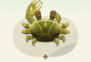 | 海岸生物 | 054 | 丑招潮蟹 | 白色品质 | 5.20 - 9.20 厘 | 浪潮涌岸·冰雪 | 沐雪季星屿特产 | 潮汐带 | 全年 | 全天 | 任意天气 | 丑招潮蟹的生物习性，尚在研究中…… |
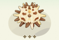 | 海岸生物 | 055 | 斑蘑海胆 | 白色品质 | 10.00 - 17.00 厘 | 浪潮涌岸·冰雪 | 沐雪季星屿特产 | 潮汐带 | 全年 | 全天 | 任意天气 | 斑蘑海胆的生物习性，尚在研究中…… |
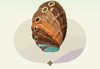 | 海岸生物 | 063 | 皇金鲍 | 紫色品质 | 4.00 - 8.00 厘 | 浪潮涌岸·冰雪 | 沐雪季星屿特产 | 潮汐带 | 全年 | 全天 | 任意天气 | 皇金鲍的生物习性，尚在研究中…… |
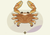 | 海岸生物 | 064 | 拥剑梭子蟹 | 紫色品质 | 9.00 - 18.00 厘 | 浪潮涌岸·冰雪 | 沐雪季星屿特产 | 潮汐带 | 全年 | 全天 | 任意天气 | 拥剑梭子蟹的生物习性，尚在研究中…… |
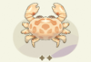 | 海岸生物 | 065 | 花斑箱蟹 | 紫色品质 | 9.00 - 18.00 厘 | 浪潮涌岸·冰雪 | 沐雪季星屿特产 | 潮汐带 | 全年 | 全天 | 任意天气 | 花斑箱蟹的生物习性，尚在研究中…… |
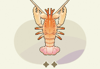 | 海岸生物 | 066 | 拟海螯虾 | 紫色品质 | 6.80 - 12.00 厘 | 浪潮涌岸·冰雪 | 沐雪季星屿特产 | 潮汐带 | 全年 | 全天 | 任意天气 | 拟海螯虾的生物习性，尚在研究中…… |
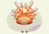 | 海岸生物 | 067 | 猩猩海菊蛤 | 紫色品质 | 12.00 - 24.00 厘 | 浪潮涌岸·冰雪 | 沐雪季星屿特产 | 潮汐带 | 全年 | 全天 | 任意天气 | 猩猩海菊蛤的生物习性，尚在研究中…… |
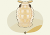 | 海岸生物 | 057 | 大王具足虫 | 金色品质 | 28.80 - 45.60 厘 | 浪潮涌岸·冰雪 | 沐雪季星屿特产 | 潮汐带 | 全年 | 全天 | 任意天气 | 大王具足虫的生物习性，尚在研究中…… |
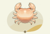 | 海岸生物 | 058 | 肥胖秃头蟹 | 金色品质 | 5.20 - 9.20 厘 | 浪潮涌岸·冰雪 | 沐雪季星屿特产 | 潮汐带 | 全年 | 全天 | 任意天气 | 肥胖秃头蟹的生物习性，尚在研究中…… |
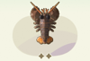 | 海岸生物 | 002 | 螯龙虾 | 紫色品质 | 46.00 - 66.00 厘 | 潮涌四季 | 全地区 | 潮汐带 | 全年 | 全天 | 任意天气 | 不同的螯龙虾，会有不同的惯用“手”。 |
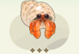 | 海岸生物 | 004 | 寄居蟹 | 白色品质 | 5.40 - 9.00 厘 | 潮涌四季 | 全地区 | 潮汐带 | 全年 | 全天 | 任意天气 | 为了最完美的“房子”，它会不惜杀死海螺。 |
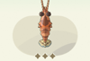 | 海岸生物 | 005 | 虎纹对虾 | 白色品质 | 6.80 - 12.00 厘 | 潮涌四季 | 全地区 | 潮汐带 | 全年 | 全天 | 任意天气 | 加热前和加热后，它都是红色的。 |
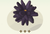 | 海岸生物 | 006 | 海胆 | 白色品质 | 10.00 - 17.00 厘 | 潮涌四季 | 全地区 | 潮汐带 | 全年 | 全天 | 任意天气 | 它会吃卷心菜。 |
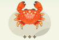 | 海岸生物 | 008 | 正直爱洁蟹 | 白色品质 | 9.00 - 18.00 厘 | 潮涌四季 | 全地区 | 潮汐带 | 全年 | 全天 | 任意天气 | 光看名字，很难察觉到它有毒。 |
| 海岸生物 | 009 | 心鸟蛤 | 紫色品质 | 4.00 - 8.00 厘 | 潮涌四季 | 全地区 | 潮汐带 | 全年 | 全天 | 任意天气 | 心形之中，是一个藻类温室。 | |
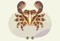 | 海岸生物 | 010 | 裸掌盾牌蟹 | 紫色品质 | 5.20 - 9.20 厘 | 潮涌四季 | 全地区 | 潮汐带 | 全年 | 白天 | 任意天气 | “赤手空拳”，也算是一种武器。 |
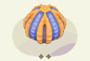 | 海岸生物 | 011 | 蓝礼服海胆 | 紫色品质 | 10.00 - 17.00 厘 | 潮涌四季 | 全地区 | 潮汐带 | 全年 | 夜晚 | 任意天气 | 没有很扎手的刺，给人感觉很有礼貌。 |
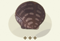 | 海岸生物 | 015 | 珠贝 | 白色品质 | 12.00 - 24.00 厘 | 潮涌四季 | 全地区 | 潮汐带 | 全年 | 全天 | 任意天气 | 撬开珠贝寻找珍珠，也可以看作是在开盲盒。 |
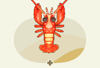 | 海岸生物 | 016 | 海神后海螯虾 | 金色品质 | 14.40 - 21.60 厘 | 潮涌四季 | 全地区 | 潮汐带 | 全年 | 全天 | 任意天气 | 这个拗口的名字能被熟知，全因它太过好吃了。 |
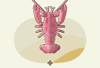 | 海岸生物 | 020 | 密刺盲龙虾 | 金色品质 | 14.40 - 21.60 厘 | 潮涌四季 | 全地区 | 潮汐带 | 全年 | 全天 | 任意天气 | 深海没有光，于是它退化了视力。 |
| 海岸生物 | 018 | 火焰海胆 | 金色品质 | 潮涌四季 | 全地区 | 潮汐带 | 全年 | 白天 | 任意天气 | |||
| 海岸生物 | 022 | 胜利黎明蟹 | 白色品质 | 5.20 - 9.20 厘 | 潮涌四季 | 全地区 | 潮汐带 | 全年 | 全天 | 任意天气 | 胜利黎明蟹的“胜率”，其实并不高。 | |
| 海岸生物 | 029 | 美人虾 | 紫色品质 | 2.80 - 5.00 厘 | 潮涌四季 | 全地区 | 潮汐带 | 全年 | 全天 | 任意天气 | 身为美人，当然是比较喜欢“风平浪静”。 | |
| 海岸生物 | 030 | 汉堡贝 | 金色品质 | 4.00 - 8.00 厘 | 潮涌四季 | 全地区 | 潮汐带 | 全年 | 全天 | 任意天气 | 像汉堡，比汉堡还要美味。 | |
| 海岸生物 | 041 | 波纹龙虾 | 白色品质 | 31.00 - 62.00 厘 | 潮涌四季 | 全地区 | 潮汐带 | 全年 | 全天 | 任意天气 | 没有大钳子的龙虾，才是真正的龙虾。 | |
| 海岸生物 | 021 | 深海珊瑚蟹 | 金色品质 | 潮涌四季 | 全地区 | 潮汐带 | 全年 | 夜晚 | 任意天气 | |||
| 海岸生物 | 042 | 海仙人掌 | 白色品质 | 潮涌四季 | 全地区 | 潮汐带 | 全年 | 全天 | 下雨 | |||
| 海岸生物 | 047 | 掌头海葵 | 白色品质 | 9.00 - 18.00 厘 | 潮涌四季 | 全地区 | 潮汐带 | 冬季 | 白天 | 雪天 | 掌头海葵的生物习性，尚在研究中…… | |
| 海岸生物 | 053 | 脊尾齿指虾蛄 | 紫色品质 | 13.00 - 21.00 厘 | 潮涌四季 | 全地区 | 潮汐带 | 冬季 | 夜晚 | 雪天 | 脊尾齿指虾蛄的生物习性，尚在研究中…… | |
| 海岸生物 | 056 | 疙瘩拳蟹 | 白色品质 | 潮涌四季 | 全地区 | 潮汐带 | 全年 | 全天 | 下雨 | |||
| 海岸生物 | 003 | 锦绣龙虾 | 紫色品质 | 潮涌四季·特产 | 禾夏 | 潮汐带 | 全年 | 全天 | 任意天气 | |||
| 海岸生物 | 092 | 红纹新岩瓷蟹 | 紫色品质 | 潮涌四季·特产 | 禾夏 | 潮汐带 | 全年 | 全天 | 任意天气 | |||
| 海岸生物 | 031 | 红石蟹 | 紫色品质 | 5.20 - 9.20 厘 | 潮涌四季·特产 | 塔法 | 潮汐带 | 全年 | 全天 | 任意天气 | 和潮水赛跑，是为了吃到喜欢的海藻。 | |
| 海岸生物 | 032 | 玫瑰龙虾 | 紫色品质 | 31.00 - 62.00 厘 | 潮涌四季·特产 | 塔法 | 潮汐带 | 全年 | 全天 | 任意天气 | 美丽，也美味。 | |
| 海岸生物 | 047 | 油画海扇蛤 | 紫色品质 | 12.00 - 24.00 厘 | 冬涌潮起 | 塔法 | 潮汐带 | 冬季、春季 | 全天 | 任意天气 | 油画海扇蛤的生物习性，尚在研究中…… | |
| 海岸生物 | 046 | 椰子螺 | 金色品质 | 14.00 - 28.00 厘 | 冬涌潮起 | 全地区 | 潮汐带 | 冬季 | 全天 | 任意天气 | 椰子螺的生物习性，尚在研究中…… | |
| 海岸生物 | 047 | 紫礁螯虾 | 金色品质 | 14.40 - 21.60 厘 | 冬涌潮起 | 全地区 | 潮汐带 | 冬季 | 全天 | 任意天气 | 紫礁螯虾的生物习性，尚在研究中…… | |
| 海岸生物 | 048 | 草莓蟹 | 紫色品质 | 5.20 - 9.20 厘 | 冬涌潮起 | 全地区 | 潮汐带 | 冬季 | 夜晚 | 任意天气 | 草莓蟹的生物习性，尚在研究中…… | |
| 海岸生物 | 050 | 美味优游蟹 | 白色品质 | 9.00 - 18.00 厘 | 冬涌潮起 | 全地区 | 潮汐带 | 冬季 | 夜晚 | 任意天气 | 美味优游蟹的生物习性，尚在研究中…… | |
| 海岸生物 | 042 | 海螯虾 | 紫色品质 | 14.40 - 21.60 厘 | 冬涌潮起 | 全地区 | 潮汐带 | 冬季 | 全天 | 任意天气 | 海螯虾的生物习性，尚在研究中…… | |
| 海岸生物 | 048 | 海菠萝 | 白色品质 | 9.00 - 18.00 厘 | 冬涌潮起 | 全地区 | 潮汐带 | 冬季、春季 | 白天 | 任意天气 | 海菠萝的生物习性，尚在研究中…… | |
| 海岸生物 | 044 | 红星梭子蟹 | 紫色品质 | 9.00 - 18.00 厘 | 冬涌潮起 | 全地区 | 潮汐带 | 冬季、春季 | 白天 | 任意天气 | 红星梭子蟹的生物习性，尚在研究中…… | |
| 海岸生物 | 050 | 普通黄道蟹 | 紫色品质 | 9.00 - 18.00 厘 | 冬涌潮起 | 全地区 | 潮汐带 | 冬季 | 全天 | 任意天气 | 普通黄道蟹的生物习性，尚在研究中…… | |
| 海岸生物 | 051 | 清白招潮蟹 | 紫色品质 | 5.20 - 9.20 厘 | 冬涌潮起 | 禾夏 | 潮汐带 | 冬季、春季 | 全天 | 任意天气 | 清白招潮蟹的生物习性，尚在研究中…… | |
| 海岸生物 | 052 | 长矛龙虾 | 紫色品质 | 31.00 - 62.00 厘 | 冬涌潮起 | 全地区 | 潮汐带 | 冬季 | 全天 | 任意天气 | 长矛龙虾的生物习性，尚在研究中…… | |
| 海岸生物 | 093 | 杂色龙虾 | 金色品质 | 滩岸铺春 | 全地区 | 潮汐带 | 春季 | 全天 | 任意天气 | |||
| 海岸生物 | 069 | 医生虾 | 紫色品质 | 2.80 - 5.00 厘 | 滩岸铺春 | 全地区 | 潮汐带 | 春季、夏季 | 全天 | 任意天气 | 它会给鱼“看病”，但不是所有鱼都乐意。 | |
| 海岸生物 | 060 | 皮皮虾 | 白色品质 | 13.00 - 21.00 厘 | 滩岸铺春 | 全地区 | 潮汐带 | 春季 | 夜晚 | 任意天气 | 它的一拳能媲美子弹。 | |
| 海岸生物 | 070 | 绿海胆 | 紫色品质 | 10.00 - 17.00 厘 | 滩岸铺春 | 全地区 | 潮汐带 | 春季 | 夜晚 | 任意天气 | 绿海胆不一定是绿色的。 | |
| 海岸生物 | 095 | 女神鸟尾蛤 | 金色品质 | 滩岸铺春 | 塔法 | 潮汐带 | 春季、夏季 | 夜晚 | 任意天气 | |||
| 海岸生物 | 071 | 蜜蜂虾 | 紫色品质 | 2.80 - 5.00 厘 | 滩岸铺春 | 全地区 | 潮汐带 | 春季、夏季 | 白天 | 任意天气 | 它喜欢骑在海参背上，原因至今不明。 | |
| 海岸生物 | 097 | 骷髅熊猫海鞘 | 白色品质 | 滩岸铺春 | 全地区 | 潮汐带 | 春季、夏季 | 全天 | 任意天气 | |||
| 海岸生物 | 072 | 海葵岩虾 | 紫色品质 | 2.80 - 5.00 厘 | 滩岸铺春 | 塔法 | 潮汐带 | 春季、夏季 | 白天 | 任意天气 | 不怕海葵有毒的刺细胞，只要不在蜕壳期。 | |
| 海岸生物 | 064 | 豆形拳蟹 | 白色品质 | 滩岸铺春 | 禾夏 | 潮汐带 | 春季、夏季 | 全天 | 任意天气 | |||
| 海岸生物 | 073 | 蓝龙虾 | 紫色品质 | 46.00 - 66.00 厘 | 滩岸铺春 | 全地区 | 潮汐带 | 春季、夏季 | 夜晚 | 任意天气 | 蓝龙虾的生物习性，尚在研究中…… | |
| 海岸生物 | 061 | 竹蛏 | 白色品质 | 15.00 - 21.00 厘 | 滩岸铺春 | 全地区 | 潮汐带 | 春季、夏季 | 全天 | 任意天气 | 竹蛏的生物习性，尚在研究中…… | |
| 海岸生物 | 096 | 博比特虫 | 金色品质 | 60.00 - 80.00 厘 | 滩岸铺春 | 全地区 | 潮汐带 | 春季、夏季 | 夜晚 | 任意天气 | 博比特虫的生物习性，尚在研究中…… | |
| 海岸生物 | 074 | 十三齿琴虾蛄 | 紫色品质 | 13.00 - 21.00 厘 | 滩岸铺春 | 全地区 | 潮汐带 | 春季、夏季 | 白天 | 任意天气 | 十三齿琴虾蛄的生物习性，尚在研究中…… | |
| 海岸生物 | 094 | 蓝巨海菊蛤 | 紫色品质 | 滩岸铺春 | 禾夏 | 潮汐带 | 春季、夏季 | 全天 | 任意天气 | |||
| 海岸生物 | 023 | 红纹寄居蟹 | 紫色品质 | 星屿之滩（禾夏） | 禾夏H83区星屿特产 | 潮汐带 | 全年 | 全天 | 任意天气 | |||
| 海岸生物 | 024 | 六腕辐射海星 | 紫色品质 | 星屿之滩（禾夏） | 禾夏H83区星屿特产 | 潮汐带 | 全年 | 全天 | 任意天气 | |||
| 海岸生物 | 027 | 青蟹 | 白色品质 | 星屿之滩（禾夏） | 禾夏H83区星屿特产 | 潮汐带 | 全年 | 全天 | 任意天气 | |||
| 海岸生物 | 028 | 海燕海星 | 白色品质 | 星屿之滩（禾夏） | 禾夏H83区星屿特产 | 潮汐带 | 全年 | 全天 | 任意天气 | |||
| 海岸生物 | 040 | 太阳海星 | 紫色品质 | 星屿之滩（禾夏） | 禾夏H83区星屿特产 | 潮汐带 | 全年 | 全天 | 任意天气 | |||
| 海岸生物 | 025 | 糖果条纹虾 | 紫色品质 | 星屿之滩（禾夏） | 禾夏H83区星屿特产 | 潮汐带 | 全年 | 全天 | 任意天气 | |||
| 海岸生物 | 026 | 彩虹蝴蝶虾 | 金色品质 | 星屿之滩（禾夏） | 禾夏H83区星屿特产 | 潮汐带 | 全年 | 全天 | 任意天气 | |||
| 海岸生物 | 034 | 天使红虾 | 紫色品质 | 星屿之滩（塔法） | 塔法T31区星屿特产 | 潮汐带 | 全年 | 全天 | 任意天气 | |||
| 海岸生物 | 039 | 扁趾寄居蟹 | 紫色品质 | 星屿之滩（塔法） | 塔法T31区星屿特产 | 潮汐带 | 全年 | 全天 | 任意天气 | |||
| 海岸生物 | 045 | 梭子蟹 | 白色品质 | 星屿之滩（塔法） | 塔法T31区星屿特产 | 潮汐带 | 全年 | 全天 | 任意天气 | |||
| 海岸生物 | 048 | 盘鲳 | 白色品质 | 星屿之滩（塔法） | 塔法T31区星屿特产 | 潮汐带 | 全年 | 全天 | 任意天气 | |||
| 海岸生物 | 033 | 紫海扇蛤 | 紫色品质 | 星屿之滩（塔法） | 塔法T31区星屿特产 | 潮汐带 | 全年 | 全天 | 任意天气 | |||
| 海岸生物 | 036 | 机械虾 | 紫色品质 | 星屿之滩（塔法） | 塔法T31区星屿特产 | 潮汐带 | 全年 | 全天 | 任意天气 | |||
| 海岸生物 | 038 | 斑马螳螂虾 | 金色品质 | 星屿之滩（塔法） | 塔法T31区星屿特产 | 潮汐带 | 全年 | 全天 | 任意天气 |
本页面内容由玩家自行整理编辑的资料站，游戏内容版本均为测试版本
本页为《星布谷地》玩家图鉴资料页，内容整理自玩家资料站与游戏内数据，仅供参考；游戏版本更新后数据可能滞后。
站点由 GitHub Pages 静态托管 · 与游戏官方及 B 站 WIKI 无隶属关系 · 游戏素材版权归原权方所有。